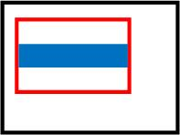

|
|||||||||
| PREV PACKAGE NEXT PACKAGE | FRAMES NO FRAMES | ||||||||
See:
Description
| Class Summary | |
|---|---|
| Image | Represents an image of agnostic type that can be painted into a graphics context. |
| ImageFactory | A factory class for creating different types of images. |
Provides classes for including images in applications.
You can use Image objects to display graphics of different formats in UI components, such as menu items. You can also display Image objects in a Graphics context.
You can create an Image object from a Bitmap or
EncodedImage by using the ImageFactory class. Use either createImage(Bitmap) or createImage(EncodedImage).
Image myImage1 = ImageFactory.createImage(Bitmap.getBitmapResource("logo.jpg"));
Image myimage2 = ImageFactory.createImage(EncodedImage.getEncodedImageResource("info.png")); |
In BlackBerry® Java Development Environment 5.0 or later, you can use an Image as an icon in a menu item.
Image object by using the ImageFactory class and providing either a bitmap or encoded image in createImage().MenuItem.setIcon() to associate the Image with the menu item.Image myImage = ImageFactory.createImage(Bitmap.getBitmapResource("logo.jpg"));
MenuItem myItem = new MenuItem("Custom menu item", 0, 0)
{
public void run()
{
// menu item's action here
}
};
myItem.setIcon(myImage);
addMenuItem(myItem); |
The Image is automatically scaled to fit within a square that is the same height as the menu font.
You can display an Image in a Graphics context by invoking Image.paint() in the UI component's paint() method. When you invoke Image.paint(), you provide a Graphics context, the x and y offset in the Graphics context, the desired width and height of the image, and, optionally, an alignment style (see Aligning the image).
The following code sample displays an Image at the upper-left corner in a Screen, using one-fourth of the width and height of the screen's Graphics context.
final class ImageDemoScreen extends MainScreen
{
Image image1 = ImageFactory.createImage(Bitmap.getBitmapResource("building.jpg"));
public ImageDemoScreen()
{
...
}
protected void paint(Graphics graphics)
{
image1.paint(graphics, 0, 0, Display.getWidth()/4, Display.getHeight()/4);
}
} |
When an Image is painted in a Graphics context, the Image is scaled to the maximum size that fits the region that is specified by the width and height passed into Image.paint(). The aspect ratio of the image is preserved. You can call Image.getHeight() and Image.getWidth() to return the height and width of the scaled image.
When the scaled image is smaller than the region that is specified in the Image.paint() method, the image must be aligned.
Consider the following situation. The area below that is outlined in black is the paintable region in the Graphics object that is passed into the Image.paint() method. The area outlined in red is the region that is passed into the method as x, y, width, and height. The blue area is the scaled image. In this case, the image doesn't fill the specified region, so it must be aligned. By default, the image is centered horizontally and vertically in the region, as shown below.

You can provide an alignment style as a fifth argument to Image.paint() to override the default alignment. For example, if you specify Image.BOTTOM as the alignment style, the image is aligned at the bottom of the specified region, as shown below.
|
|||||||||
| PREV PACKAGE NEXT PACKAGE | FRAMES NO FRAMES | ||||||||
Copyright 1999-2011 Research In Motion Limited. 295 Phillip Street, Waterloo, Ontario, Canada, N2L 3W8. All Rights Reserved.
Java is a trademark of Oracle America Inc. in the US and other countries.
Legal